SAML set up with Keycloak
This document provides you with the steps for configuring an CloudConnexa instance to use Keycloak as your SAML identity provider (IdP).
This document provides you with the steps for configuring a CloudConnexa instance to use Keycloak as the SAML identity provider (IdP).
Steps: Retrieve certificate value and IdP endpoint from Keycloak
Navigate to Keycloak and sign in with your Administrator account.
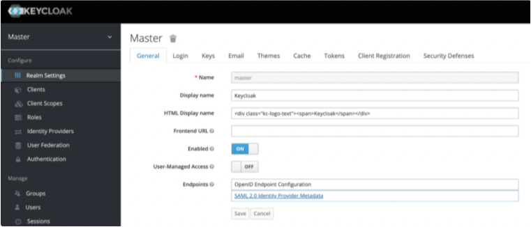Access Realm Settings > Endpoints and click SAML 2.0 Identity Provider Metadatal.
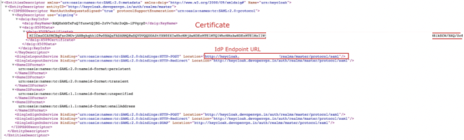 Copy the IdP X.509 Public Certificate and the IdP Authentication Endpoint URL, which are used later in the CloudConnexa set up process.
Steps: Configure and enable SAML in CloudConnexa
Sign in to the CloudConnexa
https://cloud.openvpn.com/Access Settings > User Authentication and click Edit.
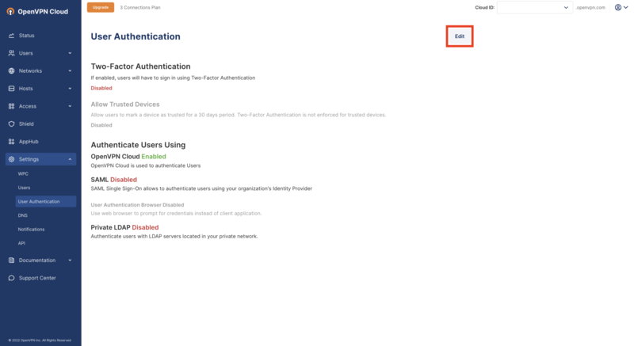Click on Configure in the Authenticate Users Using > SAML section.
The SAML Configuration window opens. Click Next.
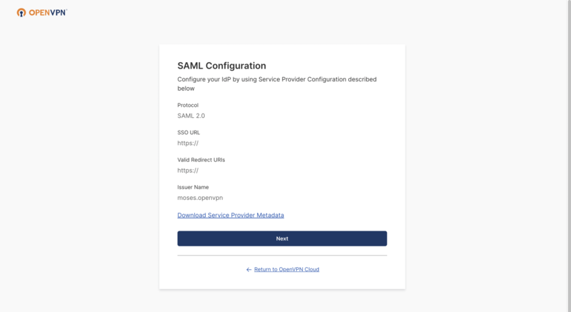
Add your IdP Name (optional), and then select Manual Configuration.
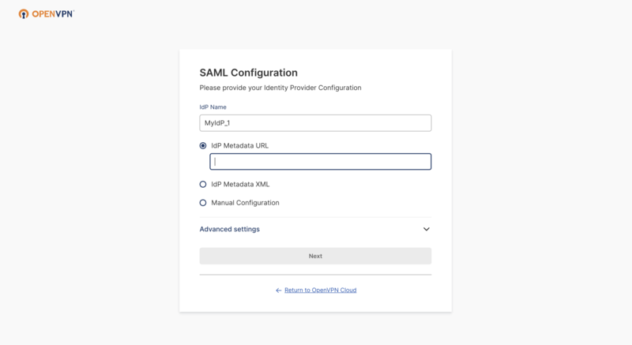Paste the previously copied IdP Authentication Endpoint URL and the IdP X.509 Public Certificate.
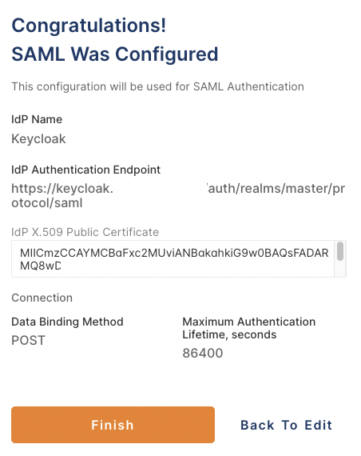Click Next, review the displayed information, then click Finish.
You now have the option to use SAML to authenticate Users.
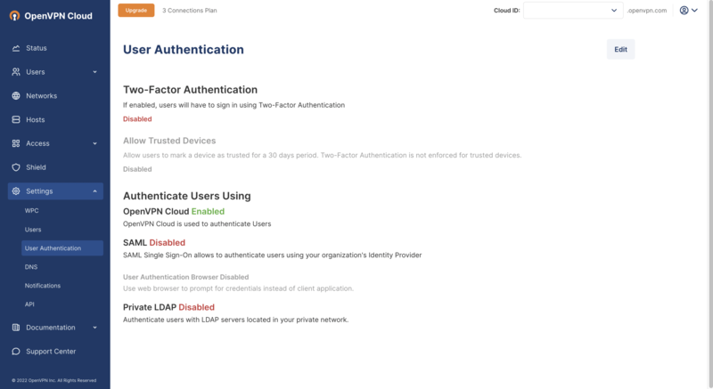
Steps: Create a new Keycloak client
Navigate to Keycloak and sign in as an Administrator.
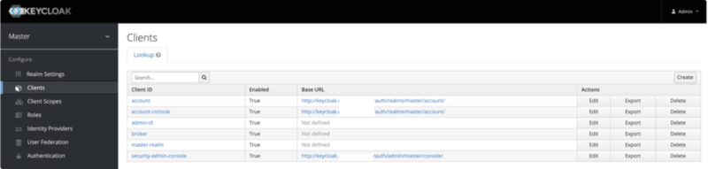Access Clients and click Create.
Set the Client ID to be the same as the Issuer Name that was displayed in the SAML configuration on the CloudConnexa portal:
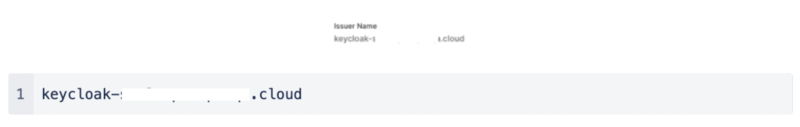Select SAML as the Client Protocol.
Enter the SSO URL for the Client SAML Endpoint:
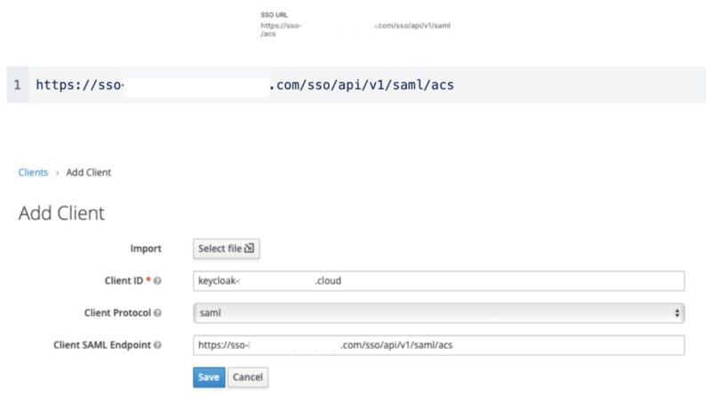Click Save.
The settings tab displays the default values.
Enable Sign Assertions.
Disable Client Signature Required and Force POST Binding.
Set the Name ID format to email.
Enter this value in Valid Redirect URIs, which allows redirects to the ACS URL:
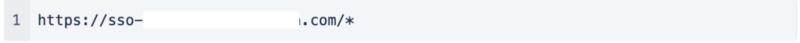All other values are left as default.
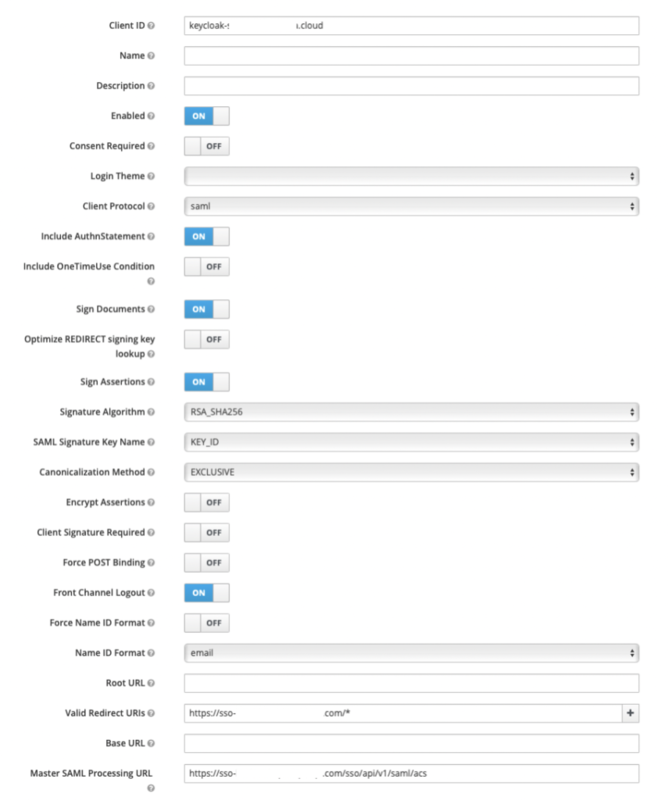
Steps: Create a Keycloak User account
Navigate to Keycloak, access Users, and click Add User.
Fill out the form with your data.
Note
You can select Email Verified if you use a test email that doesn’t allow verification.
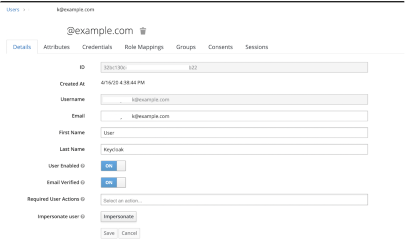Open the Credentials tab and assign a password for the User account, and click Set Password.
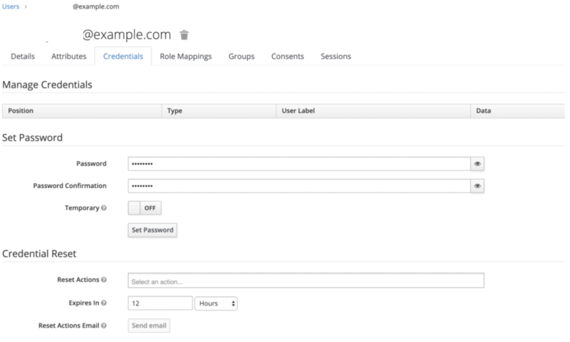
Steps: Sign in to your CloudVPN domain with Keycloak
Navigate to the CloudConnexa account page at: https://myaccount.openvpn.com/product-select
Click Not an Owner? Sign In Here.
CloudConnexa recognizes that your domain uses SAML and displays the Single Sign On prompt.
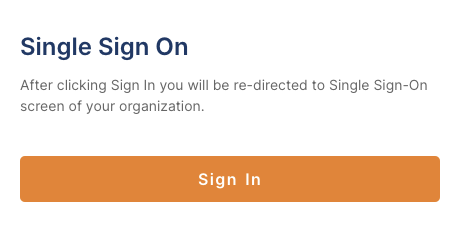
Click Sign In.
The Keycloak Log In page opens.
Enter the Keycloak test account email and password and click Log In.
The CloudConnexa Get Connected page opens with app download and installation instructions.
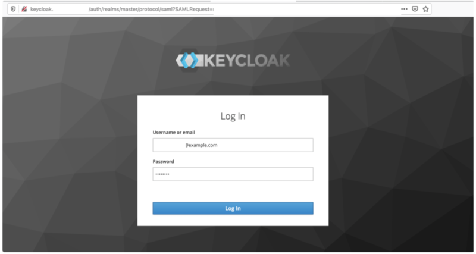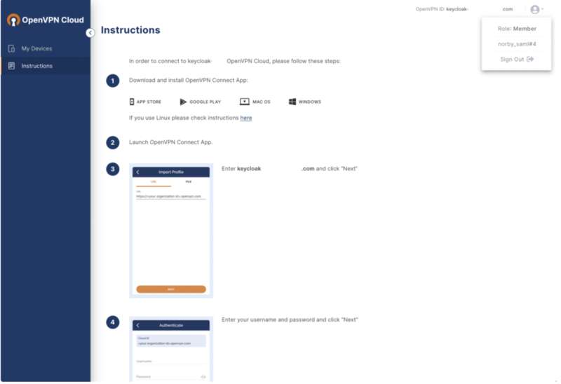
Steps: Configure attributes and group mapping in Keycloak
Navigate to Keycloak, access Clients, and click on your Client ID.
Click on the Mappers tab, which allows you to create SAML attributes.
Note
At the time of publication, CloudConnexa only supports First Name, Last Name, Email, and Groups for mapping attributes.
Click Create, and in Mapper Type select User Property.
Add a separate attribute entry for each of First Name, Last Name, and Email.
Note
You must use these defined Property name values in the Property field.
Attribute
Property
Purpose
Email
email
To pass the email value to the service provider.
First Name
firstName
To pass the first name value to the service provider.
Last Name
lastName
To pass the last name value to the service provider.
Set the SAML Attribute Name value to be the same as each corresponding Property name value.
Click Create, and in Mapper Type select Group List to create a Group Mapper.
Note
You must use groups as the defined Group attribute name.
Attribute | Group attribute name | Purpose |
Group | groups | To pass the groups value to the service provider. |
Steps: Configure attribute mapping in CloudConnexa
To finalize your attribute mapping set up, you must ensure that the Property values and SAML Attribute values match the Attribute Mapping values in your SAML Configuration on CloudConnexa.
Access CloudConnexa > Settings > User Authentication > SAML > View Attirbute Mapping to check that those values match :
Steps: Set up group mapping in CloudConnexa
Access CloudConnexa Settings > User Authentication > SAML > View Group Mapping and click Add Rule.
Enter the name of the group(s) from your identity provider under SAML IdP User Group(s) and then select a group from the CloudConnexa User Groups that you want to map to your IdP group(s).
Steps: Set up identity provider initiated flow
There are two ways to enable SAML authentication to an application: service provider initiated flow (SP-initiated) and identity provider initiated flow (IdP-initiated). The SP-initiated flow is considered more secure.
For the SP-initiated flow, a User navigates to a tenant URL that leads them to a SAML login page. During the IdP-initiated flow, a User opens their account on the IdP portal and they sign in to any of their assigned apps from that portal. Open WPC doesn’t support the classic IdP-initiated flow out of the box because of the lack of security. However, we do provide a workaround for those Administrators who use IdP-initiated SAML authentication.
In brief, we need to retrieve the RelayState value from the SAML request/response and paste this value into the corresponding field on the IdP.
Sign in to the app using SP-initiated flow through the direct Open WPC ID URL e.g. https://keycloak-saml.openvpn-qa.com with opened SAML extension (extension that can be downloaded from Chrome Web Store https://chrome.google.com/webstore/detail/saml-devtools-extension/jndllhgbinhiiddokbeoeepbppdnhhio?hl=en-US).
Find the SAML response or request (that is highlighted with green color in the extension) it doesn`t matter response or request cause needed RelayState value we can extract from both operations.
Click on the response/request and on the Request tab find and copy value called RelayState (see the screenshot below).
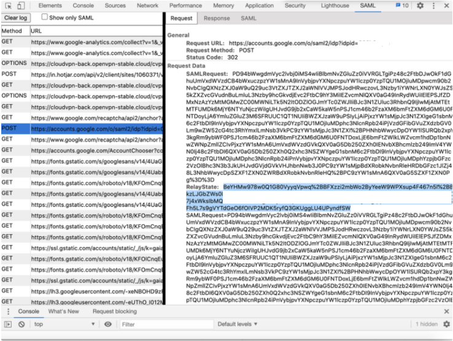Paste this value into https://www.urldecoder.org/ and decode.
Copy the decoded value and paste it in the IdP Initiated SSO RelayState field on the IdP side(see the screenshot below). Save configuration.
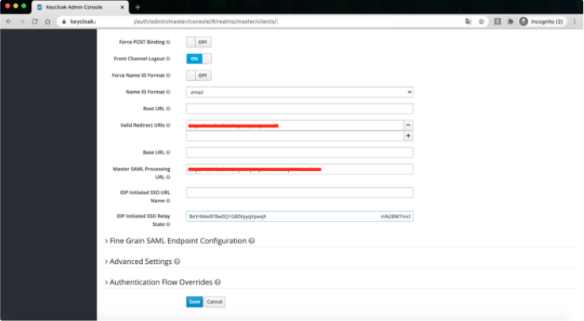After some time the changes will take effect on IdP side and Users can sign in using the IdP-initiated flow.